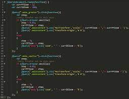

jQuery

Introducción
jQuery es una biblioteca de JavaScript que hace más fácil la manipulación de HTML,
la creación de animaciones y la gestión de eventos en páginas web. Ofrece una sintaxis
abreviada y simplificada para realizar tareas comunes de JavaScript de manera más eficiente.
Con jQuery, los desarrolladores pueden crear aplicaciones web más interactivas y atractivas para los usuarios.

Ventajas de usar JQuery
Principales ventajas de utilizar jQuery:
-
Fácil de aprender: jQuery tiene una sintaxis intuitiva y fácil de aprender, lo que lo hace ideal para desarrolladores con poca experiencia en JavaScript.
-
Abreviado y simplificado: jQuery permite realizar tareas comunes de JavaScript de manera más eficiente, utilizando una sintaxis abreviada y simplificada.
-
Cross-browser compatibility: jQuery se asegura de que el código funcione de manera consistente en diferentes navegadores, lo que ahorra tiempo y esfuerzo al desarrollador.
-
Gran comunidad y recursos en línea: jQuery cuenta con una gran comunidad de desarrolladores y una amplia cantidad de recursos en línea, lo que lo hace ideal para el aprendizaje y la resolución de problemas.
-
Aumenta la productividad: jQuery permite realizar tareas de manera más rápida y sencilla, lo que aumenta la productividad del desarrollador.
-
Mejora la experiencia de usuario: jQuery permite crear páginas web más interactivas y atractivas para los usuarios, mejorando así su experiencia en línea.
Desventajas de usar JQuery
Principales desventajas de jQuery:
- Peso del archivo: jQuery es una biblioteca grande y su archivo de descarga es significativo en términos de tamaño, lo que puede ralentizar la carga de la página.
- Rendimiento: Aunque jQuery es muy eficiente, algunas operaciones pueden ser más lentas en comparación con la programación nativa.
- Dependencia: jQuery depende de JavaScript para funcionar, lo que significa que si el usuario desactiva JavaScript en su navegador, no se podrán realizar muchas de las funciones de jQuery.
- Sobrecarga de código: Algunos desarrolladores abusan de la simplicidad de jQuery y escriben código que es más largo y complicado de lo necesario, lo que resulta en una sobrecarga de código y una mayor dificultad para mantener el proyecto.
- Desactualización: A medida que evolucionan las tecnologías web, es posible que algunas características y funciones de jQuery ya no sean compatibles con versiones más recientes del navegador o estándares web.
Ejemplo de uso
Pincha en el siguiente enlace: Ejemplo
Desarrollador: Rafael Martín Serrano.